Plane of Earth A
Mini Boss/Ring Event Guide
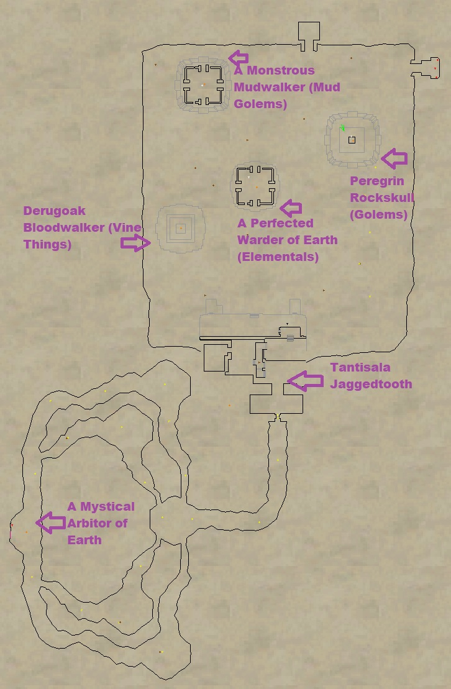
A Mystical Arbitor of Earth is the “last” boss in the zone and grants the Earth B flag. It will spawn after all of the ring events are completed, and it only stays up for so long (1 hour?).
Peregrin Rockskull
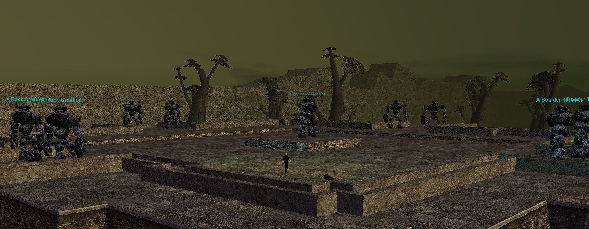
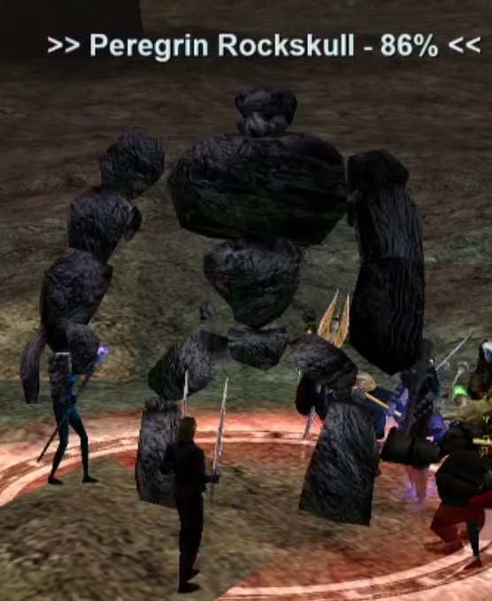
Basically everything in this event is slowable. Pullers can split mobs as necessary. I recommend standing along the East Wall and pulling to there. There are several waves:
- Wave 1 – Kill the 8 mobs at the top edge of the temple
- Wave 2 – Several packs of A Stone Fortification spawn. Kill them. They can be AE’d. They rampage.
- Wave 3 – 4x A Mound of Rubble spawn. They AE ramp. Spread them out. They’ll walk back to the temple at low HP. Don’t snare them.
Wave 4 – A Rock Monstrosity spawns.
Fight Info:
- Hits 1700+
- Approx. 750K HP
- Slowable
- Casts Pebble Rain (PBAE, Snare, Magic Based, 10 second recast)
- AE Rampages
Wave 5 – A Stone Heap will spawn in packs of 4. They are pretty easy. About 6 of these waves spawn. This will take a few minutes to clear them all.
Wave 6 – Peregrin Rockskull
Fight Info:
- Hits 470–1910 (PQDI; eqprogression estimated 1500+)
- 600,000 HP (PQDI; eqprogression estimated ~550K)
- Slowable
- Perodically Memblurs
- Casts Pebble Rain (PBAE, Snare, Magic Based, 10 second recast)
- AE Rampages
- Rampages
- Flurry
| Level | 73 |
|---|---|
| HP | 600,000 |
| Hits | 470 - 1910 |
| Resistances | MR 90 / CR 90 / FR 90 / DR 90 / PR 90 |
| Special Abilities | Summon, Enrage, Area Rampage, Flurry, Dual Wield, Do Not Equip, Magical Attack, Unmezzable, Uncharmable, Unstunable, Immune to fleeing, Immune to melee except magical, Immune to lull effects, NO LOITERING |
| Can Cast | Pebble Rain |
| Procs | Froglok Misery |
Cross-referenced from pqdi.cc (Project Quarm Database Interface)
Mudwalker
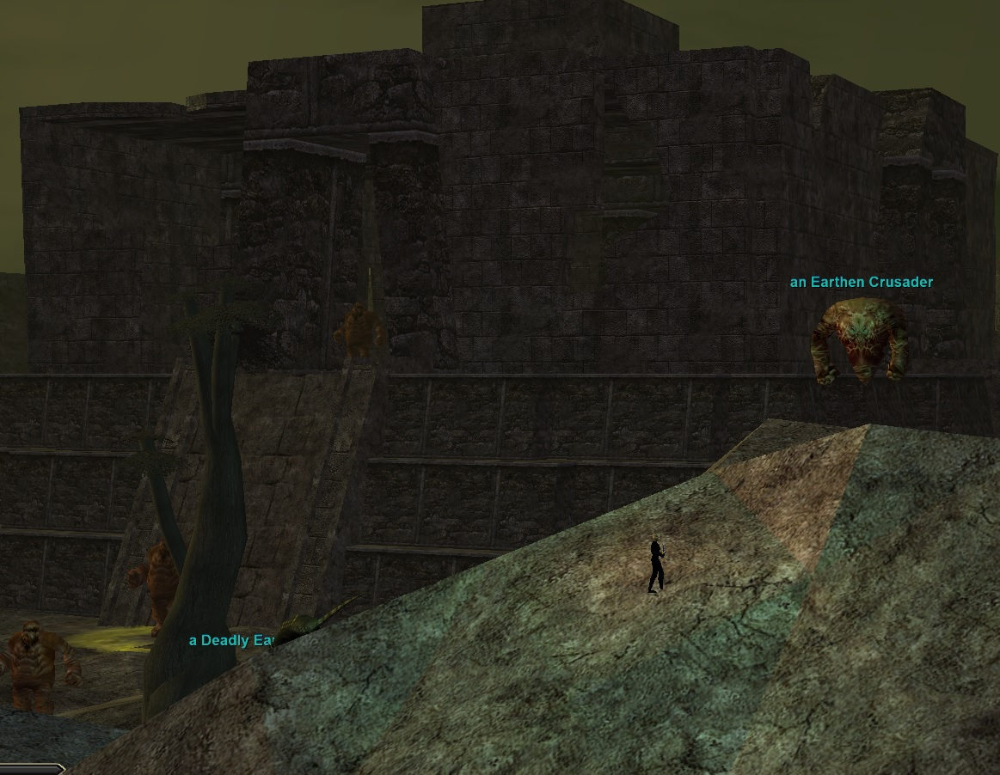
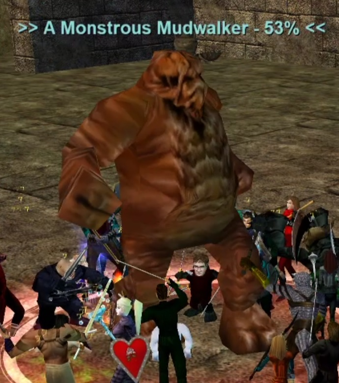
Basically everything in this event is slowable. It’s easiest to fight in the middle of the temple for this one. Although be careful because mobs will pop directly on the raid. There are several waves:
- Wave 1 – Kill all the an Earthen Mudwalkers in the area.
- Wave 2 – A Sludge Lurker spawns in the middle of the temple. He AE Rampages. Every certain HP % he will despawn and approx. 10x A Mud Mudlet will spawn. Once they die A Sludge Lurker will respawn again. Rinse and repeat until dead. He seems to spawn adds at roughly 75% 60% 35% 25% HP intervals.
- Wave 3 – 4x A Filth Gorger spawn. They Flurry/AE Rampage.
Wave 4 – A Monstrous Mudwalker spawns.
Fight Info:
- Hits 470–1910 (PQDI; eqprogression estimated 1800+)
- 600,000 HP (PQDI; eqprogression estimated ~550K)
- Slowable
- Perodically Memblurs
- Casts Shackles (PBAE, Unresistable Root)
- AE Rampages
| Level | 73 |
|---|---|
| HP | 600,000 |
| Hits | 470 - 1910 |
| Resistances | MR 90 / CR 90 / FR 90 / DR 90 / PR 90 |
| Special Abilities | Summon, Enrage, Area Rampage, Flurry, Dual Wield, Do Not Equip, Magical Attack, Unmezzable, Uncharmable, Unstunable, Immune to fleeing, Immune to melee except magical, Immune to lull effects, NO LOITERING |
| Can Cast | Shackles |
| Procs | Storm Avalanche |
Cross-referenced from pqdi.cc (Project Quarm Database Interface)
Derugoak Bloodwalker
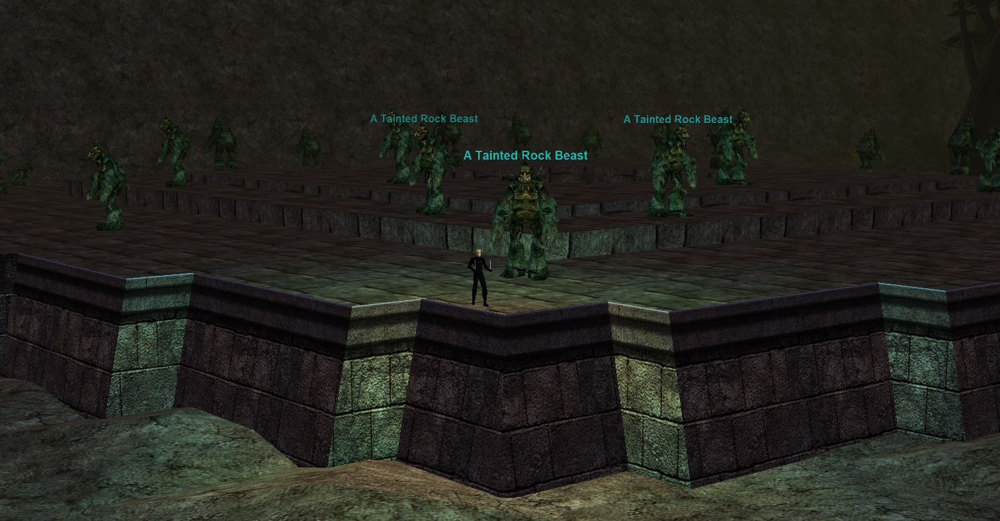
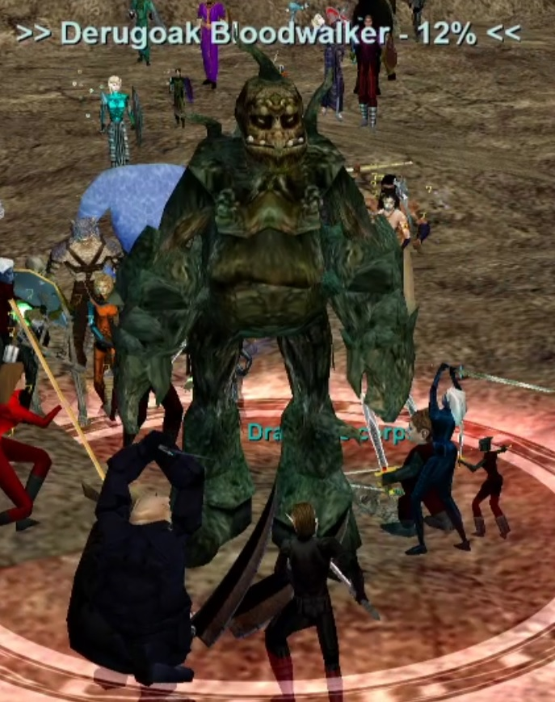
Basically everything in this event is slowable. It’s usually best to setup along the wall, but you can setup anywhere around the platform. This event is pretty straight forward. There are several waves:
- Wave 1 – Kill all the A Tainted Rock Beast. There’s about 30. They Flurry and Rampage.
- Wave 2 – Kill all the A Bloodthirsty Vegerog. There’s 10 of them. They Flurry, Rampage, and AE Rampage.
Wave 3 – Kill Derugoak Bloodwalker
Fight Info:
- Hits 470–1910 (PQDI; eqprogression estimated 1800+)
- 600,000 HP (PQDI; eqprogression estimated ~550K)
- Slowable
- Perodically Memblurs
- Casts Meteor Storm (Targeted AE, 1500 DD/-500 Mana, -300 Fire Based, 40 sec recast)
- AE Rampage
- Flurry
| Level | 73 |
|---|---|
| HP | 600,000 |
| Hits | 470 - 1910 |
| Resistances | MR 90 / CR 90 / FR 90 / DR 90 / PR 90 |
| Special Abilities | Summon, Enrage, Area Rampage, Flurry, Dual Wield, Do Not Equip, Magical Attack, Unmezzable, Uncharmable, Unstunable, Unfearable, Immune to fleeing, Immune to melee except magical, Immune to lull effects, NO LOITERING |
| Can Cast | Meteor Storm |
| Procs | Rain of Terror |
Cross-referenced from pqdi.cc (Project Quarm Database Interface)
A Perfected Warder of Earth
A Perfected Warder of Earth
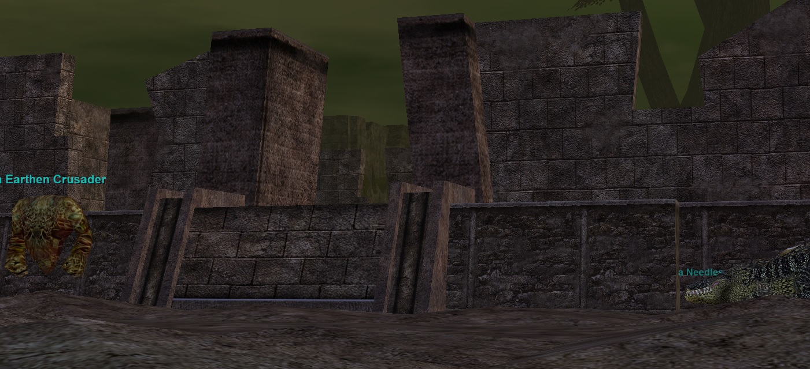
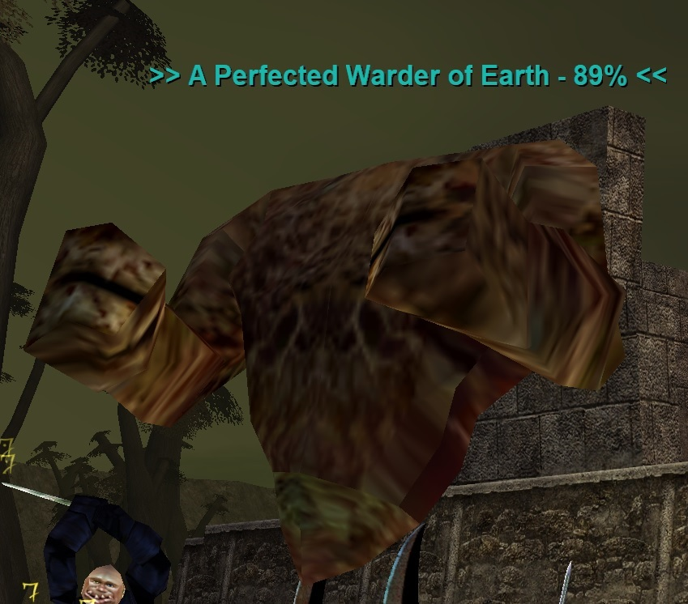
For this event you’ll want to setup between the ring event area (see map) and A Dusty Warder. Pre-clear all the trash in between before triggering the event.
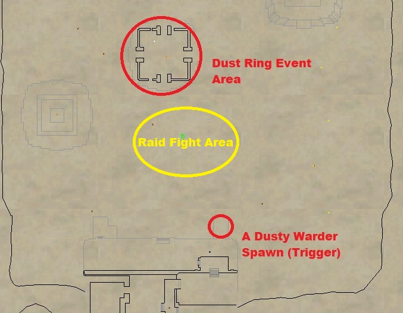
- Setup in the “Raid Fight Area” and Kill A Dusty Warder to start the event. He dies quickly, however when he spawns about 5 A Dust Devotee spawn on top of him. Kill them. They hit for around 500 and Rampage. They are slowable.
- Inside the spawn ring event area mode A Dust Devotee’s spawn. Pull them out and continue to kill them. There’s about 30 or so.
- After all the A Dust Devotees die, 3x Triumviate of Soil spawn. They will aggro the raid. They hit for around 1,100 max and are slowable. They Flurry, Rampage, and AE Rampage.
- When the last Triumviate of Soil dies, A Perfected Warder of Earth (Final Boss) will spawn and aggro the raid.
- At around 70% HP another 3x Triumviate of Soil will spawn. If not killed, A Perfected Warder of Earth will HP lock at 50%.
- 3x A Triumviate Protector also spawn during the fight. They hit for around 600 and are mezzable.
- Once all 6 adds are dead A Perfected Warder of Earth HP will unlock and you can finish the kill.
A Perfected Warder of Earth Fight Info:
- Hits 2200+
- Approx. 550K HP
- Slowable
- Perodically Memblurs
- Casts Raging Blizzard (Targeted AE, -400 Mana/-600 HP, -300 Cold Based)
- Casts Fist of Earth (PBAE, 200 DD/Small Pushback, Magic Based)
- AE Rampage
- Rampage
- Flurry
Tantisala Jaggedtooth
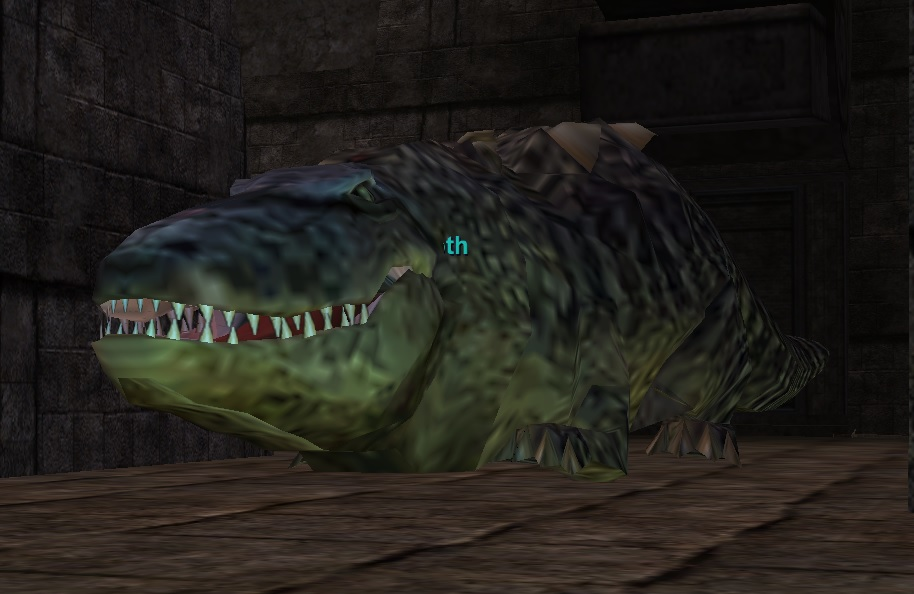
Fight Info:
- Hits 470–1910 (PQDI; eqprogression estimated 2300+)
- Slowable
- 600,000 HP (PQDI; eqprogression estimated ~650K)
- Casts Diseased Cloud (Targeted AE, 55% Slow, 1250 DD, -150 Diseased Based, 12 sec recast)
- AE Rampage
Quarm Script
Sourced from the Quarm server Lua script (poeartha/Tantisala_Jaggedtooth.lua, SecretsOTheP/quests): Hate-drop/warp-heal mechanic only — warps back + heals 30% when aggro is lost (anti-Memory-Blur); periodic hate reduction to 5%.
| Level | 73 |
|---|---|
| HP | 600,000 |
| Hits | 470 - 1910 |
| Resistances | MR 90 / CR 90 / FR 90 / DR 90 / PR 90 |
| Special Abilities | Summon, Enrage, Area Rampage, Dual Wield, Do Not Equip, Magical Attack, Unmezzable, Uncharmable, Unstunable, Unsnarable, Unfearable, Immune to fleeing, Immune to melee except magical, Immune to lull effects, NO LOITERING |
| Can Cast | Diseased Cloud |
| Procs | Raven Screech |
Cross-referenced from pqdi.cc (Project Quarm Database Interface)
Mystical Arbitor
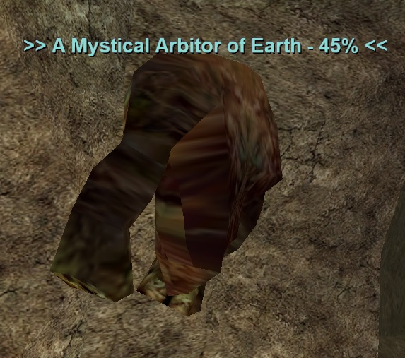
Fight Info:
- Spawns upon finishing all 4 ring events. Stays up for around an hour (exact time unknown).
- Hits 491–1988 (PQDI; eqprogression estimated 1800+)
- Slowable
- 600,000 HP (PQDI; eqprogression estimated ~550K)
- Perodically Memblurs
- Casts Elemental Judgment (PBAE, 35% Slow/7.5 sec stun/-350 Mana Drain/500 HP DoT/-200 Magic Based, 36 sec recast)
- AE Rampage
- Flurries
- Hail Planar Projection for Earth B Flag
Quarm Script
Sourced from the Quarm server Lua script (poeartha/A_Mystical_Arbitor_of_Earth.lua, SecretsOTheP/quests): Same warp+heal hate-drop as Tantisala, plus a 50-minute despawn timer paused during combat; on death spawns a Planar Projection.
| Level | 74 |
|---|---|
| HP | 600,000 |
| Hits | 491 - 1988 |
| Resistances | MR 90 / CR 90 / FR 90 / DR 90 / PR 90 |
| Special Abilities | Summon, Enrage, Area Rampage, Flurry, Double Attack, Dual Wield, Do Not Equip, Magical Attack, Uncharmable, Unstunable, Immune to fleeing, Immune to melee except magical, Immune to lull effects, NO LOITERING |
| Can Cast | Elemental Judgement |
| Procs | Fist of Earth |
Cross-referenced from pqdi.cc (Project Quarm Database Interface)
Plane of Earth B
Ragrax, Stronghold of the Twelve
The bosses spawn in the second room of the zone. You’ll need to clear all the trash in the first room to open the door to the second room. You’ll then need to clear all the trash in the second room to spawn the bosses.
Awisano
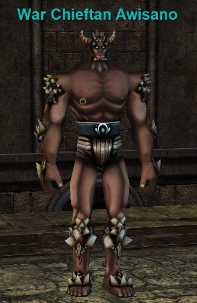
Fight Info:
- Hits 509–1866 (PQDI; eqprogression estimated 2,000+ on 35% shielding tank)
- Slowable
- Rampage
- 400,000 HP
- Casts Deathfog IV (PBAE, 900 HP DoT, -150 Poison based, 2 min recast)
- Procs Gravel Rain (PBAE, 250 DD + Snare, 72 curse counter, -300 Magic Based)
Quarm Script
Sourced from the Quarm server Lua script (poearthb/#War_Chieftan_Awisano.lua, SecretsOTheP/quests): Death is tracked via invisible marker NPCs (crash-safe); killing him progresses the event toward Warlord Gintolaken.
| Level | 75 |
|---|---|
| HP | 400,000 |
| Hits | 509 - 1866 |
| Resistances | MR 290 / CR 230 / FR 125 / DR 90 / PR 1000 |
| Special Abilities | Summon, Enrage, Rampage, Dual Wield, Do Not Equip, Unmezzable, Uncharmable, Unstunable, Unsnarable, Immune to fleeing, Immune to melee except magical, Immune to lull effects, NO LOITERING |
| Can Cast | Deathfog IV |
| Procs | Gravel Rain |
Cross-referenced from pqdi.cc (Project Quarm Database Interface)
Birak
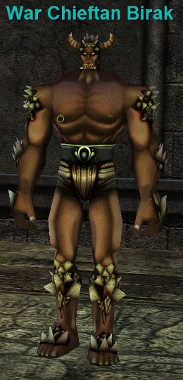
Fight Info:
- Hits 509–2253 (PQDI; eqprogression estimated 2,200+ on 35% shielding tank)
- 350,000 HP
- Rampage
- Slowable
- Casts Deathfog IV (PBAE, 900 HP DoT, -150 Poison based, 2 min recast)
- Procs Gravel Rain (PBAE, 250 DD + Snare, 72 curse counter, -300 Magic Based)
Quarm Script
Sourced from the Quarm server Lua script (poearthb/#War_Chieftan_Birak.lua, SecretsOTheP/quests): Death is tracked via invisible marker NPCs (crash-safe); killing him progresses the event toward Warlord Gintolaken.
| Level | 75 |
|---|---|
| HP | 350,000 |
| Hits | 509 - 2253 |
| Resistances | MR 235 / CR 290 / FR 125 / DR 90 / PR 1000 |
| Special Abilities | Summon, Enrage, Rampage, Dual Wield, Do Not Equip, Unmezzable, Uncharmable, Unstunable, Unsnarable, Immune to fleeing, Immune to melee except magical, Immune to lull effects, NO LOITERING |
| Can Cast | Deathfog IV |
| Procs | Gravel Rain |
Cross-referenced from pqdi.cc (Project Quarm Database Interface)
Galronar
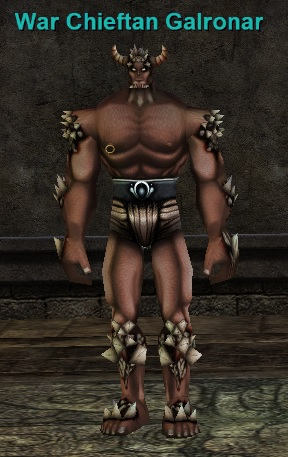
Fight Info:
- Hits 510–2060 (PQDI; eqprogression estimated 2,100+ on 35% shielding tank)
- Slowable
- Rampages
- 300,000 HP
- Casts Deathfog IV (PBAE, 900 HP DoT, -150 Poison based, 2 min recast)
- Procs Gravel Rain (PBAE, 250 DD + Snare, 72 curse counter, -300 Magic Based)
Quarm Script
Sourced from the Quarm server Lua script (poearthb/#War_Chieftan_Galronar.lua, SecretsOTheP/quests): Death is tracked via invisible marker NPCs (crash-safe); killing him progresses the event toward Warlord Gintolaken.
| Level | 75 |
|---|---|
| HP | 300,000 |
| Hits | 510 - 2060 |
| Resistances | MR 235 / CR 230 / FR 155 / DR 1000 / PR 95 |
| Special Abilities | Summon, Enrage, Rampage, Dual Wield, Do Not Equip, Unmezzable, Uncharmable, Unstunable, Unsnarable, Immune to fleeing, Immune to melee except magical, Immune to lull effects, NO LOITERING |
| Can Cast | Deathfog IV |
| Procs | Gravel Rain |
Cross-referenced from pqdi.cc (Project Quarm Database Interface)
Gintolaken
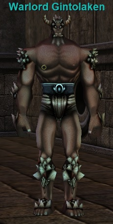
This guy spawns/becomes targetable once the other 3 minis are dead.
Fight Info:
- Hits 551–2212 (PQDI; eqprogression estimated 2,400+ on 35% shielding tank)
- Slowable
- 1,050,000 HP (PQDI; eqprogression estimated 1.1 – 1.2 Million)
- AE Rampage (stay max melee, can be nasty)
- Perodically Memblurs including at 50% HP
- Casts Storm Comet (Targeted AE, 10%Snare/90% Slow/3000 DD, Unresistable, 30 sec recast)
- Procs Gravel Rain (PBAE, 250 DD + Snare, 72 curse counter, -300 Magic Based)
Quarm Script
Sourced from the Quarm server Lua script (poearthb/#Warlord_Gintolaken.lua, SecretsOTheP/quests): Spawns only after all three chieftains are dead; hate-drop + boundary check (teleport back, wipe hate, Balance of the Nameless); on death → 84-hour respawn timer.
| Level | 77 |
|---|---|
| HP | 1,050,000 |
| Hits | 551 - 2212 |
| Resistances | MR 365 / CR 290 / FR 150 / DR 1000 / PR 95 |
| Special Abilities | Summon, Enrage, Area Rampage, Dual Wield, Do Not Equip, Unmezzable, Uncharmable, Unstunable, Unsnarable, Immune to fleeing, Immune to melee except magical, Immune to lull effects, NO LOITERING |
| Can Cast | Storm Comet |
| Procs | Gravel Rain |
Cross-referenced from pqdi.cc (Project Quarm Database Interface)
Avatar of Earth
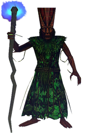
Loot
- Chestguard of Enchanted Marble
- Earthen Bile
- Earthspined Staff
- Elemental Chain Pant Pattern
- Elemental Greaves Mold
- Elemental Leather Pant Pattern
- Elemental Silk Pant Pattern
- Leaf-Twined Guards
- Ring of Flowing Stones
- Sword of Primordial Power
Fight Info
The Rathe Council is one of the most memorable and well known raids in all of EverQuest. It is one of the few early Everquest raids that require a good amount of team execution.
There are a total of 12 Rathe Council members. 6 of them are mezzable and 6 of them are rootable.
The rootable ones can be rooting while pulling, but eventually will need to be tanked. This means 6 tanks are required. They all hit for roughly 3,000 damage when they are at full HP. The lower HP they have, the less they will hit for. This means that you should DPS down all the mobs to roughly 5-10% to keep them from hitting too hard so they are tankable while the raid works on the other councilmen.
You must also kill all of the Rathe Councilman at roughly the same time (within 6 or 7 minutes) so you need to have them all at low HP then kill them quickly.
You will split your raid up into 3 teams: The Mez Team, Tank Team, and the Pull Team. The Mez team should be in the “drop down hole” tunnel area. The Tank team should be across the water around the outside of the temple.
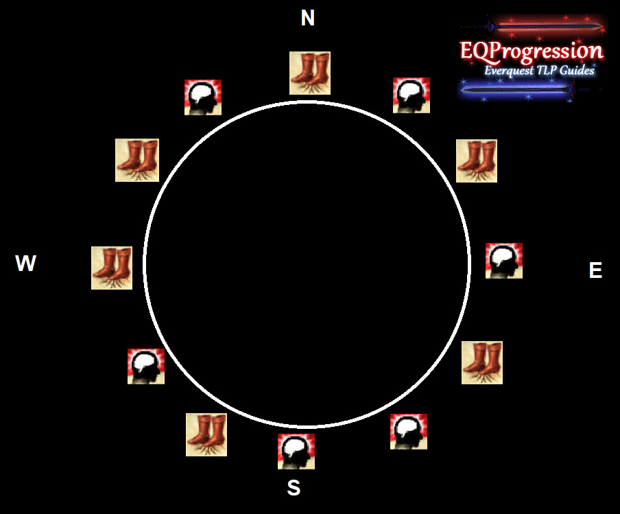
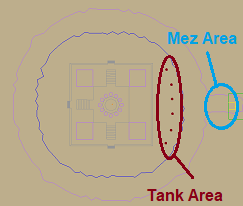
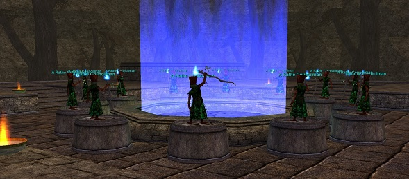
Have your pull team pull 1 mezzable councilman at a time into the Mez Area while keeping the rootable ones rooted. Your raid should then DPS it down until 5-10% and have your enchanter team keep it mezzed. Do not let the any councilman exit combat due to a memory wipe from mez, or it will regain HP quickly they may be immune to mem blur now, but unconfirmed, so be aware. Repeat this for all 6 mezzable councilmen.
While the mezzable mobs are all being worked on by the bulk of the raid, the pull team should be rooting and debuffing the 6 remaining councilman in preparation for the tanks. Keep the tanked councilmen spread out from each other. They cast the AE DoT Earthen Vengeance (lowers attack speed, AE DoT, and 1000 DD upon cast). This can be cured with Remove Greater Curse.
Once all the mezzable mobs are 5-10% hp and are under control of the enchanters, put a tank on one of the rootable mobs at a time and beat each mob down to 5-10% HP.
Rinse and repeat this process until all 6 mobs are tanked and at roughly 5-10% HP. Once ready, begin to kill one at a time. When all 12 are dead, Avatar of Earth spawns in the middle.
Avatar of Earth is pretty easy though he does cast a 95% de-aggro spell on the main tank, so the raid must be very careful on aggro.
Avatar of Earth
- 500,000 HP (PQDI; eqprogression estimated 550K MoTM)
- Slowable
- Hits 588–1958 (PQDI; eqprogression estimated 2400+, possibly harder)
- Casts Marl (PBAE, Increases Mana cost of detrimental spells, -100 HP DoT, -350 Magic Based, Curse Cure)
- Casts Ashen Form (Single Target, -95% Aggro on Main tank, -350 Magic Based, Curse Cure)
Once dead, Essence of Earth will spawn. Hail it for your flag item (Mound of Living Stone).
Quarm Script
Sourced from the Quarm server Lua script (poearthb/#Avatar_of_Earth.lua, SecretsOTheP/quests): On death → Essence of Earth loot container; Rathe Council respawns after 5 days 18 hours; failed attempts restore the council in 15 minutes; 2.5-hour despawn timer paused during combat.
| Level | 80 |
|---|---|
| HP | 500,000 |
| Hits | 588 - 1958 |
| Resistances | MR 175 / CR 190 / FR 190 / DR 180 / PR 180 |
| Special Abilities | Summon, Enrage, Rampage, Dual Wield, Do Not Equip, Unmezzable, Uncharmable, Unstunable, Immune to fleeing, Immune to melee except magical, Immune to lull effects, NO LOITERING |
| Can Cast | Ashen Form, Marl |
Cross-referenced from pqdi.cc (Project Quarm Database Interface)
Plane of Earth Traps
Right click a map for full-size version.
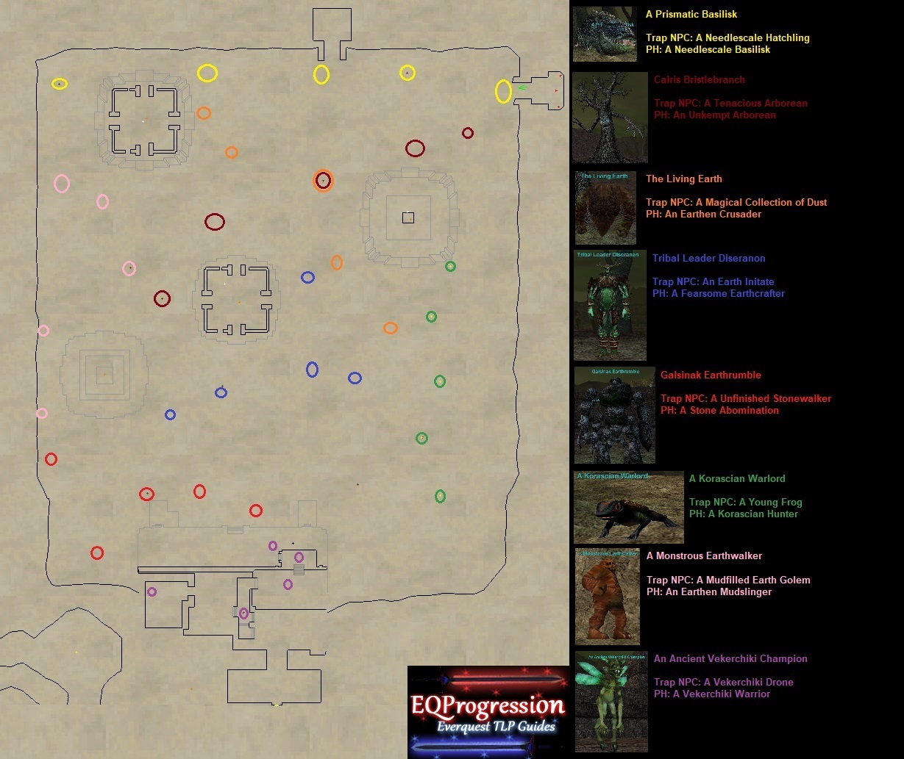
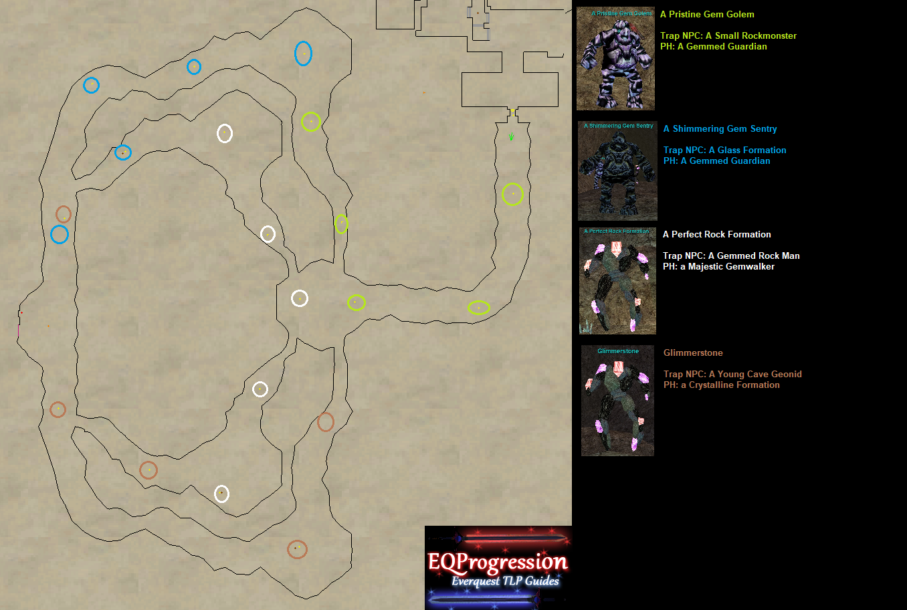
Flat Area Loot:
- A Prismatic Basilisk
Int Caster Mask
Ranger 1 HS Weapon - Calris Bristlebranch
Int Caster and Healer 2 FT Earring
PAL/SK Shield - The Living Earth
Int Caster and Healer 2 FT Ring - Tribal Leader Diseranon
Shaman Primary/Secondary/Ranged
Cold Slow Proc 1 HB - Galsinak Earthrumble
Int Caster Primary/Secondary/Ranged - A Korascian Warlord:
Int Caster and Healer Class Back
Earth Illusion Clicky - A Monstrous Earthwalker
Druid Earring - An Ancient Vekerchiki Champion
Int Caster FT 1 Ring
Monk H2H Weapon
Caves Loot:
- A Pristine Gem Golem + A Shimmering Gem Sentry (drop same loot)
Wisdom Classes Mask
Rogue Dagger - A Perfect Rock Formation:
Melee/Hybrid Ranged - Glimmerstone
Tank/Zerker 2H Pierce Weapon
Sources: eqprogression.com guide pages — Plane of Earth Mini Boss/Ring Event Guide, Plane of EarthB Boss Guide, The Rathe Council (Avatar of Earth), and Plane of Earth Traps Guide; pqdi.cc for boss statistics.